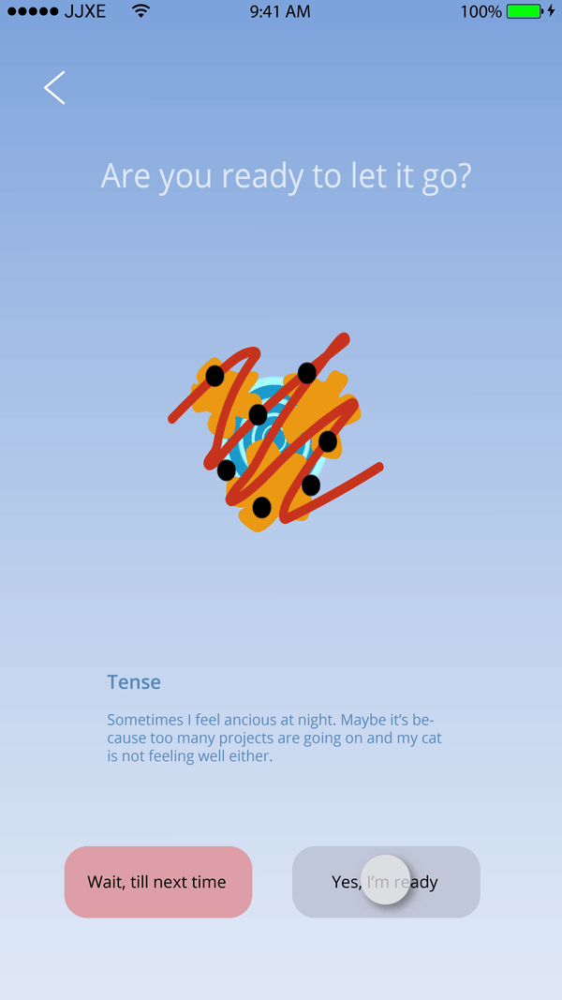

Prototype Walkthrough

Step 1. Breathe
- Breathe with the circle animation for 1 minute.
- Adjustable rhythm
Theoretical foundation:
Assist awareness and non-judgemental acceptance of unpleasant feelings (Creswell, 2017)

Step 2. Draw
- Choose different colors and shapes
- Easy and quick
Theoretical foundation: Express and understand emotions through artistic expression (Visnola, Bake, Pike, 2010)

Step 3. Release
- When you are ready, set the feeling free
- Do this in the state of mindfulness
Theoretical foundation: Assist awareness and non-judgemental acceptance of unpleasant feelings (Creswell, 2017)